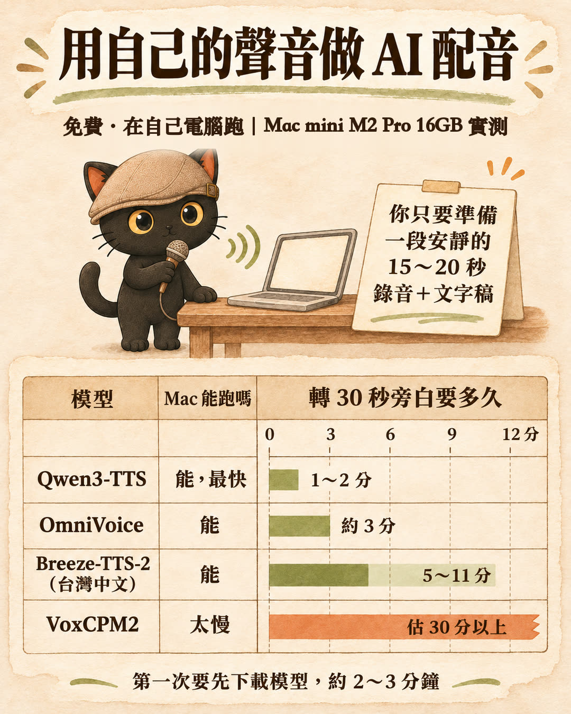

先講結論：只是克隆一個人的聲音，中國跟台灣的模型都很自然。想把兩個聲音混成新聲音，問題就來了。
- 我試了阿里巴巴的 Qwen3-TTS 跟聯發科的 Breeze-TTS-2，單純克隆時，台灣人說話的語氣都留得住。
- Qwen3-TTS 可以混，但聲音一出來就帶中國口音；Breeze-TTS-2 台灣口音很自然，但沒有混音功能，只能克隆。
- 要台灣口音就單純克隆；想要好聽的新聲音，還是去找聲音好聽的人，請他授權給你做。
- 想用自己的聲音做影片旁白、課程配音，又在意台灣口音的人
- 想幫自己的角色、AI 員工做一個新聲音的人
- 七種聲音克隆方案一張表：在哪跑、要不要錢、多久轉好
- 免費在自己電腦克隆，要準備什麼
- 雲端克隆的英文同意句原文，朵拉念給你跟讀
- 混出新聲音為什麼會帶中國口音，有試聽
- 可以直接貼給 Claude Code 的一段話
一、AI 聲音克隆方案比較：五個實測、兩個只查價格
這週我為了幫影片配旁白，前後試了五個能克隆聲音的做法，另外查了兩個沒試的。測試的電腦是 Mac mini（M2 Pro、16GB）。
| 方案 | 在哪跑、要不要錢 | 轉 30 秒旁白要多久 | 我的結果 |
|---|---|---|---|
| Breeze-TTS-2（聯發科） | 自己電腦，免費 | 5～11 分鐘 | 最像我本人；有一段參考音念出來語助詞太多 |
| Qwen3-TTS（阿里巴巴） | 自己電腦，免費 | 1～2 分鐘，最快 | 也很像；偶爾會念到停不下來，要設長度上限 |
| OmniVoice（VoiceStudio 預設模型） | 自己電腦，免費 | 約 3 分鐘 | 常吃掉句首 |
| VoxCPM2 | 自己電腦，免費 | 一句就 3 分多，估 30 分以上 | 太慢，沒跑完 |
| Gemini 語音合成克隆（Google） | 雲端，一分鐘不到台幣 1 元 | 沒量，雲端跑不佔自己電腦 | 要錄同意句，中文同意句被退，英文版才通過 |
| ElevenLabs v4 | 雲端，克隆要月費 6 美元起 | 沒試 | 只查了價格 |
| GPT-SoVITS 訓練 | 租雲端 GPU，一次約台幣 10～60 元 | 沒試 | 吃得下 5 分鐘以上的長錄音，查到沒租 |
- 用 Claude Code 剪影片，配樂從哪來、怎麼卡在拍子上？ Gemini 語音合成怎麼一句一句錄旁白、一分鐘多少錢，那篇有完整算法
二、免費在自己電腦克隆聲音：準備一段 15～20 秒的錄音
表格前四個是開源模型，我是看到 GitHub 上很紅的 VoiceStudio 才去試的。VoiceStudio 把好幾個開源聲音模型裝在一起，我沒裝它的 App，直接讓 Claude Code 把它用的模型裝在我的 Mac 上跑。在自己電腦跑，免費，不用錄同意句。
要準備的：
- 一段安靜的 15～20 秒錄音，加上這段話的逐字稿。錄影也行，我是從上課錄影裡剪出來的。
- 第一次要先下載模型，每個約 2～3 分鐘。
小提醒：同一個人換不同段落，像不像差很多。我從同一支上課錄影剪了五段，每段念出來像不像都不一樣，多剪兩三段都試一次再挑。

想用更長的錄音：要走訓練
聽一下就模仿的模型，只吃 20 秒左右的錄音。想用 5 分鐘以上的錄音，要走訓練，例如 GPT-SoVITS。訓練要租雲端 GPU，我查到 Colab 有官方範本，一次約台幣 10～60 元，還沒租。
三、雲端的 Gemini 克隆：同意句要跟參考音一起錄
Google 的 Gemini 語音合成也可以克隆聲音，在雲端跑，不佔自己電腦，一分鐘不到台幣 1 元。但它要你交兩段錄音：一段是你平常說話的參考音，一段是同意句，證明是本人。
- 同意句要念英文版。我念中文版被退件，說念的句子對不上；改念英文版就通過了。
- 我想用上課錄影當參考音，配上在家錄的同意句，被判成不是同一個人。同一份在家錄的原檔重送就成功。所以同意句跟參考音，最好同一次、用同一支麥克風錄。
同意句原文：一字不差照念
這是 Google 指定的句子，要念英文版：
I am the owner of this voice and I consent to Google using this voice to create a synthetic voice model.
這段英文的意思是：「我是此聲音的擁有者並授權谷歌使用此聲音創建語音合成模型。」
這是英文教學喔，可以跟著念練習：
🔊 朵拉正常速度：
🐢 朵拉慢慢念（跟讀用）：
- Google AI Pro 每月送的 10 美元 API 額度，怎麼領、怎麼用 Gemini 克隆要用 API，申請時要綁卡、選帳單帳戶，這篇有五個步驟和四個坑
- API key 可以貼給 AI 嗎？｜存進 Mac 鑰匙圈，讓程式自己去拿 申請到的金鑰不要貼進對話，存進鑰匙圈讓 Claude Code 自己拿
四、想把兩個聲音混成新聲音：為什麼會帶中國口音
我想把兩個聲音混成一個新角色的聲音，試了好幾組。
- Qwen3-TTS 會把一段聲音轉成一組數字，可以把兩組數字照比例混，七成加三成就是一個新聲音。但它重新計算之後，聲音一出來就帶中國口音。
- Breeze-TTS-2 台灣口音很自然，但它是聽一段參考音照著模仿，沒有那組可以混的數字，只能克隆。
我試過先用 Qwen 混，再丟給 Breeze 重念一次。口音是回來了，但聽起來還是不夠自然。下面是同一組混音（AI 角色朵拉七成、萊卡三成），兩種做法各一段：
| 做法 | 試聽 |
|---|---|
| Qwen3-TTS 直接混 | |
| Qwen 混好，再交 Breeze-TTS-2 重念 |
五、我的建議：要台灣口音就單純克隆
要台灣口音就單純克隆；想要好聽的新聲音，還是去找聲音好聽的人，請他授權給你做。
| 你想要 | 我會選 |
|---|---|
| 用自己的聲音，最像本人 | Breeze-TTS-2 |
| 用自己的聲音，要快 | Qwen3-TTS |
| 不想用自己的聲音、不想裝東西 | Gemini 語音合成，打字描述就能設計一個聲音，我的 AI 員工萊卡的聲音就是這樣做的 |
| 一個好聽的新聲音 | 找聲音好聽的人，請他授權 |
小提醒：稿子裡的「角色」兩個字，AI 常念成 jué sè，台灣念腳色，直接寫「腳色」就好。
六、可以直接貼給 Claude Code 的一段話
Claude Code 是 Claude 的一種用法，要付費訂閱 Claude 才能用，它可以直接在你的電腦上裝程式、跑程式。把錄音檔放進一個資料夾，在那個資料夾開 Claude Code，貼這段（括號換成你自己的）：
幫我在這台 Mac 裝 mlx-audio 用 Breeze-TTS-2 和 Qwen3-TTS 克隆我的聲音 參考音是這個資料夾裡的（你的錄音檔名） 它念的內容是：（貼上逐字稿） 兩個模型各念同一句給我聽 放在一起讓我比較 Qwen 要設長度上限 免得念到停不下來
- 用 Claude Code 剪影片，配樂從哪來、怎麼卡在拍子上？ 配好旁白之後，配樂和畫面怎麼對上拍子
- 裝了別人的技能包，AI 會不會被搞亂？：抄之前我會先做三件事 裝 VoiceStudio 這類別人做的工具之前的檢查
- 我怎麼叫 AI 幫我做摘要影片？｜兩小時辯論變三分鐘懶人包，我下的提示詞與三個坑 另一支用 AI 做的影片，有提示詞和配樂的坑
每個月兩場免費線上講座
主題輪流，場次會先在 LINE 社群公布。
場次在 LINE 社群公布。